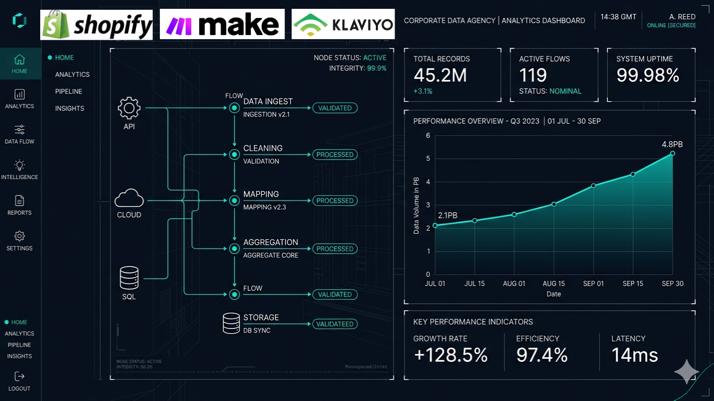

Meta Ads
Estructura, testing y optimización de campañas para adquisición, remarketing, generación de demanda y mejora de eficiencia.
Disponible para roles full-time · híbrido · remoto
Especialista en Performance Marketing con experiencia gestionando presupuestos de $15M-40M COP mensuales. Combino ejecución de pauta, analítica de datos y automatización con IA para convertir inversión publicitaria en resultados medibles dentro de equipos de marketing, growth o analytics.
Competencias
Este portafolio muestra capacidades técnicas aplicables a un rol interno: ejecución de pauta, medición, automatización CRM, dashboards e IA aplicada para tomar mejores decisiones de negocio.
Estructura, testing y optimización de campañas para adquisición, remarketing, generación de demanda y mejora de eficiencia.
Campañas orientadas a intención de búsqueda, control presupuestal, calidad de tráfico y lectura de conversiones.
Configuración de medición, eventos y reportes para entender qué canales generan oportunidades reales.
Implementación y validación de etiquetas para medir formularios, clics, conversiones y acciones clave.
Flujos comerciales, seguimiento de leads y automatizaciones en herramientas como HubSpot, Kommo y Bitrix24.
Uso práctico de inteligencia artificial para copies, análisis, segmentaciones y mejora continua de campañas.
Interacción Latinoamericana
Experiencia conectando campañas, analítica y automatización para equipos que operan en Colombia, Latinoamérica y mercados digitales de Estados Unidos.
El foco no es vender servicios, sino demostrar criterio técnico para construir sistemas de adquisición medibles dentro de una empresa.
La combinación de datos, tecnología y optimización continua permite priorizar inversión, detectar fugas y mejorar decisiones comerciales.
Experiencia
Resumen orientado a reclutadores y líderes de marketing. La experiencia está organizada para conectar cargos, empresas, fechas, herramientas y logros clave.
Gestión de campañas Google Ads y Meta Ads con presupuestos de $15M-40M COP mensuales, implementación de GA4, GTM, CAPI, CRM y automatizaciones con Python e IA.
Automatización de reportes, análisis de indicadores operativos y mejora de procesos con Excel avanzado y lectura de datos.
Email marketing, automatización en Bitrix24, campañas SMS vía Twilio, analítica con GA4 y seguimiento de comportamiento digital.
Estrategias de comunicación y marketing digital para posicionamiento de marca, contenido y soporte a canales comerciales.
Primeras responsabilidades profesionales en comunicación digital, apoyo operativo de marketing y gestión de contenidos.
Portafolio técnico
Los proyectos están presentados como evidencia profesional para reclutadores: algunos corresponden a experiencia laboral, otros son demostrativos o personales. La intención es mostrar criterio técnico, no vender servicios freelance.

Proyecto laboral enfocado en testing de audiencias, creativos, copies y remarketing sobre bases de leads no convertidos.
Auditoría de medición para detectar fricciones, eventos mal configurados y puntos críticos de abandono en el embudo.

Proyecto vinculado a e-commerce, automatización CRM, campañas digitales y mejora de mensajes para captación.

Proyecto demostrativo de automatización con datos: calcula CPA, ROAS simulado, score de campaña y recomendaciones para pausar, revisar, escalar o mantener.

Experiencia aplicada a reporting, seguimiento de indicadores y lectura ejecutiva para decisiones operativas y comerciales.

Diseño demostrativo de flujos entre fuentes de datos, CRM, dashboards y alertas para acelerar respuesta comercial.
Empresas, verticales y contextos trabajados
Stack
La tecnología es un medio: sirve para medir mejor, responder más rápido y tomar decisiones con mayor confianza basados en datos puros.
Visualización Automatizada

Control y segmentación avanzada del comportamiento de compra de productos. Mide la recurrencia del cliente, analiza la rotación del inventario y conecta tendencias para optimizar ofertas automáticas de remarketing.

El núcleo del sistema de control. Cruza el rendimiento total combinando ingresos por sucursales, ventas por empleados y conversiones de canales comerciales para una lectura ejecutiva y toma de decisiones sin fricción.
Visión de rol
Mi enfoque para aportar valor en un equipo interno es operar marketing como un sistema medible: datos limpios, reglas de negocio, alertas inteligentes y decisiones comerciales más rápidas.
Certificaciones
Credenciales relevantes para validar fundamentos técnicos y criterio profesional frente a procesos de selección.
Formación en fundamentos de marketing digital, e-commerce, analítica y optimización de canales digitales.
Certificación de Cámara de Comercio de Bogotá orientada a estrategia comercial, mercados y crecimiento.
Aplicación de inteligencia artificial y automatización publicitaria en campañas de Shopping y performance.
Para recruiters
Respuestas directas sobre disponibilidad, experiencia técnica, herramientas y tipo de rol donde puedo aportar más valor.
Roles full-time, híbridos o remotos en Performance Marketing, Paid Media, Growth Marketing, Marketing Analytics o Marketing Automation, idealmente en equipos donde la pauta, el CRM y los datos trabajen conectados.
He trabajado con presupuestos de $15M-40M COP mensuales, conectando ejecución en Meta Ads y Google Ads con medición, reportes y optimización orientada a resultados de negocio.
Meta Ads, Google Ads, GA4, Google Tag Manager, CRM Automation, HubSpot, Kommo, Bitrix24, Microsoft Clarity, Excel avanzado, dashboards y automatizaciones con Python e IA aplicada a marketing.
Además de ejecutar campañas, puedo auditar tracking, interpretar datos, construir reportes, automatizar flujos y traducir hallazgos en acciones para marketing y ventas.

Daniel Aldana
Performance Marketing Specialist | Disponible para roles full-time, híbridos o remotos.
Sobre mí
Soy Daniel Aldana, Performance Marketing Specialist con experiencia en la planificación, ejecución y optimización de campañas en Google Ads y Meta Ads para contextos B2B y B2C. He trabajado con presupuestos de $15M-40M COP mensuales, ecosistemas de medición con GA4/GTM y automatizaciones que ayudan a mejorar decisiones comerciales.
Busco sumarme a un equipo de marketing, growth o analytics donde pueda aportar ejecución de pauta, lectura de datos, CRM automation e IA aplicada con foco en resultados medibles.
Ver trayectoria completa en LinkedInContacto
Si estás evaluando un perfil de Performance Marketing, Paid Media, Growth o Marketing Analytics, puedes revisar mi CV, validar mi trayectoria en LinkedIn o escribirme por WhatsApp.